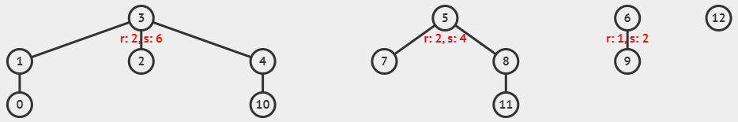
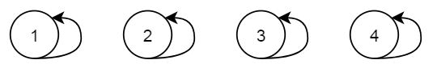
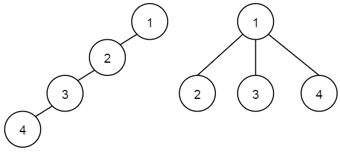
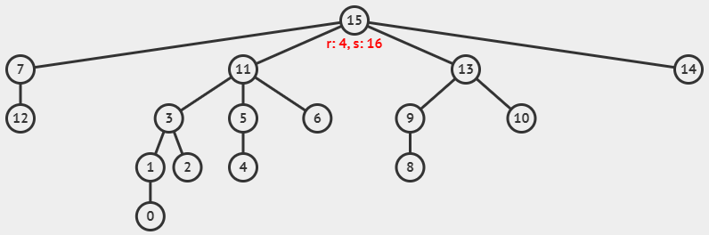
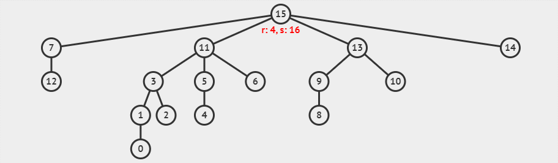
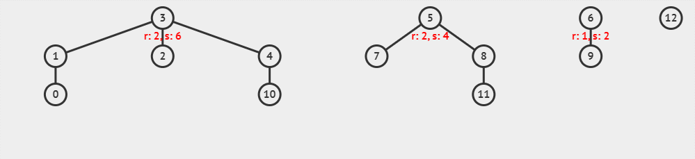

数据结构之并查集（数组实现）
并查集（Union-Find Disjoint Sets, UFDS）是一种用于处理一些不相交集合的数据结构，实现为一个森林，其中的每棵树表示一个集合，树中的节点表示对应集合中的元素。
顾名思义，并查集支持两种操作：
- 合并（Union）：合并两个元素所属集合（合并对应的树），通常是将两个集合的根节点连接在一起。
- 查找（Find）：查找某个元素所属集合，通常是找到该元素所在集合的根节点，这可以用于判断两个元素是否属于同一集合。
下图是一个具有四个不相交集合的树构成的森林。

并查集应用场景
并查集数据结构最常见的应用是跟踪无向图的连接组件。它还用于实现 Kruskal 算法的高效版本，以查找图的最小生成树。
关于并查集的应用，后面的学习中再做整理~
并查集实现
上面介绍了什么是并查集，并给出了并查集支持的一些操作。下面开始，逐步实现基于数组的并查集。
初始化
并查集的实现可以使用数组来表示每个元素所属的集合，其中：
- 数组的索引表示元素的值；
- 数组的值表示该元素所属的集合的代表元素。
一般用树的根节点作为该集合的代表元素。
初始时，每个元素都是独立的集合，它属于它自己（表示为一棵只有根节点的树），即每个元素的值和索引相同（将根节点的父亲设为自己）。
初始化时，就像这样，自己指向自己，树的高度为 0。

1 | // 初始化并查集 |
这里
rank[i]的值是以顶点i为根的子树高度的上限，它用作后面UnionSet(i, j)操作的引导启发式。先不用管rank[i]了，后面还会遇到。
查找
就像文章一开头说的那样，并查集的查找操作，是查找某个元素所属集合，通常是找到该元素所在集合的根节点。具体地，
- 查找当前元素的父元素，若父元素不是自己，则更新它为当前元素，并查找它的父元素，直到当前元素的父元素是自己为止。
并查集查找（迭代实现）
朴素的并查集查找操作（迭代实现）：
1 | // 查找元素所属的集合 |
并查集查找（递归实现）
朴素的并查集查找操作（递归实现）：
1 | // 查找元素所属的集合 |
并查集查找（带路径压缩的递归实现）
想一想，一个集合中的所有元素，虽然有共同的代表元素，但是这棵树可能呈现不同的形状。

上面这张图中，左边与右边集合中的元素一致，且代表元素都是 1，但是树的形状不同。这样的话，对于同一个元素（比如 4），查找到其代表元素 1 的迭代（递归）次数是不一样的，左边需要 3 次才能完成，而右边只需要 1 次就能完成。
因此，为了提高效率，就需要尽可能降低迭代（递归）次数。这就需要进行「路径压缩」。
想一想，上面递归方式实现的查找操作 findSet(int parent[], int x) 中，是查找元素 x 的代表元素并返回。在这个函数内部，如果当前元素的父元素不是代表元素，函数会递归的查找其父元素的代表元素（我们被划分在同一个集合中了，假如我的代表元素是 R，那么我的父元素的代表元素也是 R 呀）。
因此，我们可以 在递归的过程中，更新当前元素的代表元素，从而实现「路径压缩」，以加快后续查找。
并查集查找操作（带路径压缩的递归实现）：
1 | // 查找元素所属的集合 |
路径压缩查找示例
假如，我们有如下的不相交集合：

现在，我们使用带路径压缩的并查集查找函数，查找元素 1 的代表元素，这一过程可以可视化为下面的动画。

图中
r就是rank的缩写，s代表的是元素的数量。
合并
要合并两棵树（集合），我们只需要将一棵树的根节点连到另一棵树的根节点。要完成这一操作，我们需要：
- 查找一个元素
x的代表元素； - 查找另一个元素
y的代表元素； - 若两者的代表元素不同，则将其中一棵树的根节点连接到另一棵树的根节点上；若两者的代表元素相同，则无需合并。
1 | // 合并两个集合 |
启发式合并
合并时，选择哪棵树的根节点作为新树的根节点会影响未来操作的复杂度。我们可以 将节点较少或深度（树高）较小的树连接到另一棵，以免发生退化。
这样做的目的是尽量避免将较大的树作为子树合并到较小的树上，从而保持树的平衡，减小树的高度。
在并查集中，「退化」指的是树结构变得非常不平衡，即树的高度非常大，接近于线性结构（如链表）。
因此，在初始化小节中，数组 rank[i] 就是用来维护以顶点 i 为根的子树高度的上限，它就是在这里被使用的啦。
启发式合并（以树高为标准）
1 | void unionSet(int parent[], int rank[], int x, int y) { |
在初始化时，每个元素都是一个独立的集合，每个树的高度都为 0：
- 在进行第一次集合合并时（比如元素 1 和元素 3），则
unionSet(parent, rank, 1, 3)操作，会合并为一棵3->1的树，其中 3 为根节点，这棵新树会长高一个单位； - 在进行第二次集合合并时（比如元素 1 和元素 4），则
unionSet(parent, rank, 1, 4)操作，会合并为一棵4<-3->1的树，其中 3 为根节点，由于 1 所在的树高大于 4 所在的树高，因此在合并后，树高不会变得更高，因此不会更新rank值。
注意：在启发式合并的过程中，只能保证根节点对应
rank值是正确的，不能保证其它位置的rank值的正确性。
启发式合并示例
假如，我们有如下几个不相交集合：
现在，我们使用以树高为标准的启发式合并，执行 unionSet(parent, rank, 10, 8)，这一过程可以可视化为下面的动画。

这里 x = 10, y = 8 与 x = 8, y = 10 执行后，得到的树是不一样的哦。
你可能已经发现了：在执行合并的过程中，树也会被路径压缩，这是因为并查集的合并接口调用了查找接口。
相同集合
判断两个元素是否属于同一集合。
1 | int isSameSet(int parent[], int x, int y) { |
并查集复杂度
时间复杂度：
- 初始化：
O(n) - 朴素查找：
O(n) - 带路径压缩的查找：
O(h)，可以优化至O(α(n))，其中h是树的高度，足够平衡时h = log(n)，α是阿克曼函数 - 带路径压缩的合并：
O(h)，可以优化至O(α(n))
空间复杂度：O(n)
这里的并查集数据结构的实现，是采用的 Quick Union 方式，而不是 Quick Find 方式。
并查集完整代码测试
完整代码
1 | void init(int parent[], int rank[], int size) { |
测试代码
1 |
|
测试结果
1 | findSet(0): 0 |
参考资料：